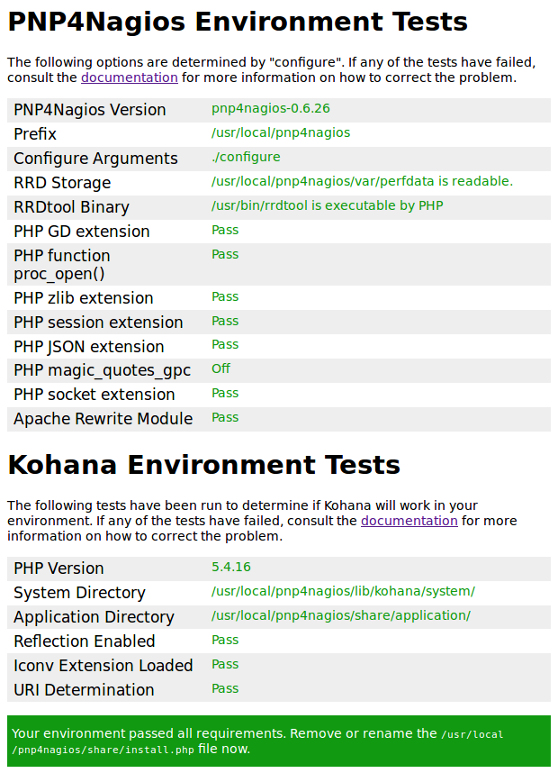

PNP4Nagios
PNP is an addon to Nagios which analyzes performance data provided by plugins and stores them automatically into RRD-databases. [1]
Basic information
Official Website: https://docs.pnp4nagios.org/
License: GNU General Public License v2.0
Tested on (Requirements)
Nagios Core: Version \(\boldsymbol{\ge}\) 2.x
Dependencies
RRDTool
PHP
Perl
Perl RRDTool
PHP-GD
Installation
This taskfile is executed only if the folder /usr/local/pnp4nagios doesn’t exist. This state is registered in the taskfile nagios-plugins-installed.yml, with the module stat.
For more information about these registers read the section Installing Nagios Plugins.
The installation process consists of downloading, uncompressing, configuring and compiling the plugin.
Note
fullinstall option installs the main program, runlevel scripts, config and HTML files.
---
- name: Create Temp Dir
file:
path: "{{ temp_dir }}"
state: directory
- name: Download PNP4Nagios Plugin
get_url:
url: "{{ pnp_plugin_url }}"
dest: "{{ temp_dir }}/{{ pnp_plugin_file }}"
- name: Extract PNP4Nagios Plugins
unarchive:
src: "{{ temp_dir }}/{{ pnp_plugin_file }}"
dest: "{{ temp_dir }}"
- name: Exec configure
shell: "./configure"
args:
chdir: "{{ temp_dir }}/pnp4nagios-0.6.26"
- name: Make all
make:
chdir: "{{ temp_dir }}/pnp4nagios-0.6.26"
target: all
- name: Make Full install
make:
chdir: "{{ temp_dir }}/pnp4nagios-0.6.26"
target: fullinstall
Configuration
PNP4Nagios can be configured in 5 different modes:
Synchronous
Bulk
Bulk with NPCD
Bulk with NPCD and npcdmod
Gearman
This procedure will configure PNP4Nagios in Bulk with NPCD mode. Bulk mode reduces the load on the Nagios Server because the data collection and Processing is not executed by a Nagios process but by NPCD.
Nagios Performance C Daemon (NPCD) processes the Performance Data produced by Nagios plugins.
Note
For more information about the different configuration modes, read [2].
Edit the following options in nagios.cfg file:
process_performance_data=1
service_perfdata_file=/usr/local/pnp4nagios/var/service-perfdata
service_perfdata_file_template=DATATYPE::SERVICEPERFDATA\tTIMET::$TIMET$\tHOSTNAME::$HOSTNAME$\tSERVICEDESC::$SERVICEDESC$\tSERVICEPERFDATA::$SERVICEPERFDATA$\tSERVICECHECKCOMMAND::$SERVICECHECKCOMMAND$\tHOSTSTATE::$HOSTSTATE$\tHOSTSTATETYPE::$HOSTSTATETYPE$\tSERVICESTATE::$SERVICESTATE$\tSERVICESTATETYPE::$SERVICESTATETYPE$
service_perfdata_file_mode=a
service_perfdata_file_processing_interval=15
service_perfdata_file_processing_command=process-service-perfdata-file
host_perfdata_file=/usr/local/pnp4nagios/var/host-perfdata
host_perfdata_file_template=DATATYPE::HOSTPERFDATA\tTIMET::$TIMET$\tHOSTNAME::$HOSTNAME$\tHOSTPERFDATA::$HOSTPERFDATA$\tHOSTCHECKCOMMAND::$HOSTCHECKCOMMAND$\tHOSTSTATE::$HOSTSTATE$\tHOSTSTATETYPE::$HOSTSTATETYPE$
host_perfdata_file_mode=a
host_perfdata_file_processing_interval=15
host_perfdata_file_processing_command=process-host-perfdata-file
It’s necessary to redefine the process-service-perfdata-file and process-host-perfdata-file commands:
define command{
command_name process-service-perfdata-file
command_line /bin/mv /usr/local/pnp4nagios/var/service-perfdata /usr/local/pnp4nagios/var/spool/service-perfdata.$TIMET$
}
define command{
command_name process-hosts-perfdata-file
command_line /bin/mv /usr/local/pnp4nagios/var/host-perfdata /usr/local/pnp4nagios/var/spool/host-perfdata.$TIMET$
}
“Using these commands the file service-perfdata will be moved to
/usr/local/pnp4nagios/var/spool/ after the interval specified in
service_perfdata_file_processing_interval has
passed. The Nagios macro $TIMET$ is appended to the filename to avoid
overwriting of old files unintentionally.” [2]
NPCD monitors /usr/local/pnp4nagios/var/spool/ directory and process_perfdata.pl
processes these files decoupled from Nagios.
Note
This configuration process is intended to be automated with the task nagios-config.yml. These options should be written previously in the config files present in the ansible role.
After configuring PNP4Nagios, it’s recommended to start NPCD as a daemon, executing:
/usr/local/pnp4nagios/bin/npcd -d -f /usr/local/pnp4nagios/etc/npcd.cfg
The task pnp4nagios-config will enable NPCD in boot time and will synchronize a PHP
configuration file needed by PHP-GD, a dependency of PNP4Nagios.
Note
For more information about PHP-GD read php-gd not detected
---
- name: Service NPCD enabled at boot time
service:
name: npcd
enabled: yes
state: started
- name: Synchronize gd.ini file
copy:
src: etc/php.d/gd.ini
dest: /etc/php.d/gd.ini
notify: apache_restart
- name: Correct Group and Owner for PNP dirs
file:
path: /usr/local/pnp4nagios
group: nagcmd
owner: nagios
recurse: yes
Test PNP4Nagios
1. Perl Script
PNP4Nagios can be tested executing a verification script provided by the official page. The main script options are:
Params |
Value |
|---|---|
-m <mode> |
sync | bulk | bulk+npcd | npcdmod |
-c <path> |
Location of nagios.cfg |
-p <path> |
Path to PNP config dir |
wget http://verify.pnp4nagios.org/verify_pnp_config
perl verify_pnp_config -m bulk+npcd -c /usr/local/nagios/etc/nagios.cfg -p /usr/local/pnp4nagios/etc/
2. PHP Home Page Check
After installing and configuring PNP4Nagios, the Home webpage http://<host>/pnp4nagios will display a detailed
environment test:

If your environment passed all requirements, remove the /usr/local/pnp4nagios/share/install.php file.
Troubleshooting
php-gd not detected
PROBLEM: PHP-GD is installed but is unrecognizable by PHP.
SOLUTION: To create a file in /etc/php.d/ that contains the
extension information indicating the path to the gd.so library. Example:
[gd]
extension=/usr/lib64/php/modules/gd.so
Can’t find Nagios Environment
PROBLEM: If PNP4Nagios is configured in Sync mode using Nagios Core 4.x, the following message appears on the web page:
Cant find Nagios Environment. Exiting ....
perfdata directory "/usr/local/pnp4nagios/var/perfdata/" is empty. Please check your Nagios config.
SOLUTION: Apparently, it’s a Nagios 4 bug, where environment data used by pnp4nagios is not provided in sync mode [3]. Bulk mode with NPCD is a better mode for configuring PNP4Nagios.